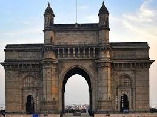
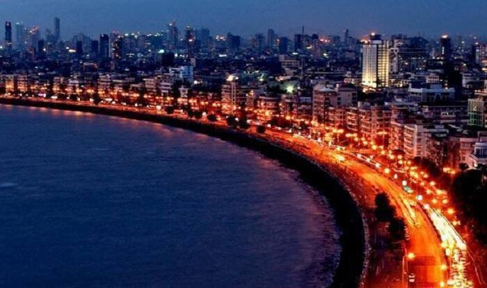

Mumbai (formerly called Bombay) is a densely populated city on India’s west coast. A financial center, it's India's largest city. On the Mumbai Harbour waterfront stands the iconic Gateway of India stone arch, built by the British Raj in 1924. Offshore, nearby Elephanta Island holds ancient cave temples dedicated to the Hindu god Shiva. The city's also famous as the heart of the Bollywood film industry.I was born and brought up in this beautiful city and its like living a new experience everyday.The gateway of India and the marine drive are some of the beautiful tourist locations in Mumbai.The pictures below are of CST,Gateway of India and Marine Drive respectively.I have been there with my family not too long ago , I enjoyed those moments and they were truly exciting.
Mumbai is a city with diversity and with so many people living in this city who has come from various regions of the world with different cultures, makes it colorful and lovable. The food, culture, music, and theatres are one of its kind and that is what attracts the people and the world. Mumbai is the also the birthplace of the Hindi cinema. The great man Dadasaheb Phalke was the one who laid the foundation. The cinematic experience for the people started with the silent film in the various Marathi theaters. Now Mumbai is the hub of cinema and entertainment. The city celebrates all the festivals with joy. The city also organizes various festivals for the people, which are worth seeing.
The people of Mumbai speak in Hindi. Though their regional language is Marathi, because of so many people from across the country living in this city, the common language to communicate in Hindi. English is also the most commonly spoken language in the city.